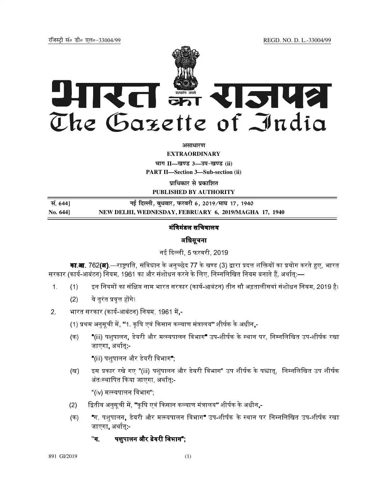
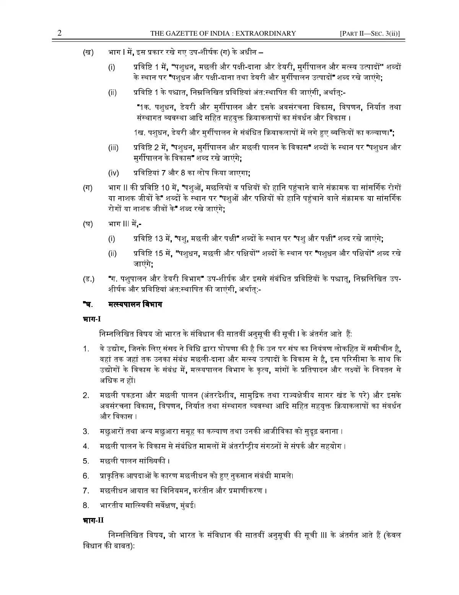
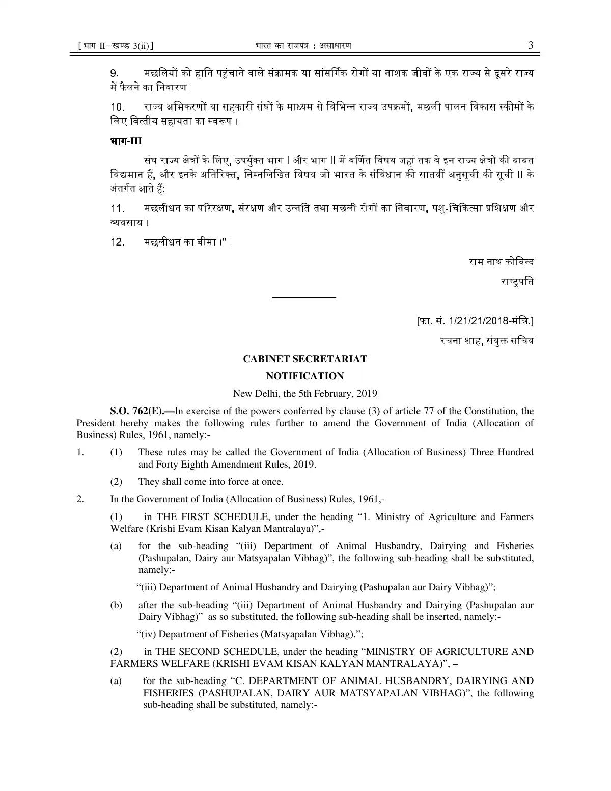
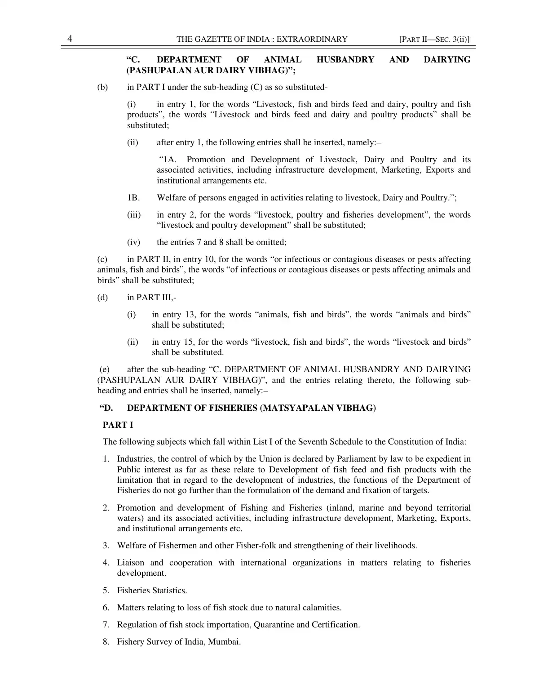
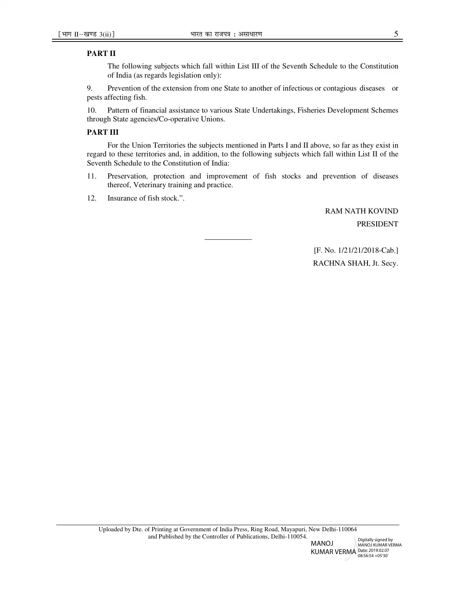

Amendment #348 (S.O. 762 (E), 2019)
11 changes: 2 to the First Schedule, 9 to the Second Schedule. 11 applied
The order, page by page
Page 1 of 5

Page 2 of 5

Page 3 of 5

123Schedule 1 › Ministry of Agriculture and Farmers Welfare › Department of Animal Husbandry, Dairying and Fisheries
- iii. Department of Animal Husbandry and Dairying
applied at schedule 1 › ministry 1 › department iii in the Rules after #348
after Schedule 1 › Ministry of Agriculture and Farmers Welfare › Department of Animal Husbandry and Dairying
- iv. Department of Fisheries
applied at schedule 1 › ministry 1 › department iv in the Rules after #348
Schedule 2 › MINISTRY OF AGRICULTURE AND FARMERS WELFARE › DEPARTMENT OF ANIMAL HUSBANDRY, DAIRYING AND FISHERIES
- C. DEPARTMENT OF ANIMAL HUSBANDRY AND DAIRYING
applied at schedule 2 › ministry MINISTRY OF AGRICULTURE AND FARMERS WELFARE › department C in the Rules after #348
Page 4 of 5

4567891011Schedule 2 › MINISTRY OF AGRICULTURE AND FARMERS WELFARE › DEPARTMENT OF ANIMAL HUSBANDRY AND DAIRYING › PART I › entry 1
for “Livestock, fish and birds feed and dairy, poultry and fish products” read “Livestock and birds feed and dairy and poultry products”
applied at schedule 2 › ministry MINISTRY OF AGRICULTURE AND FARMERS WELFARE › department C › part I › entry 1 in the Rules after #348
after Schedule 2 › MINISTRY OF AGRICULTURE AND FARMERS WELFARE › DEPARTMENT OF ANIMAL HUSBANDRY AND DAIRYING › PART I › entry 1
- 1A. Promotion and Development of Livestock, Dairy and Poultry and its associated activities, including infrastructure development, Marketing, Exports and institutional arrangements etc.
- 1B. Welfare of persons engaged in activities relating to livestock, Dairy and Poultry.
applied at schedule 2 › ministry MINISTRY OF AGRICULTURE AND FARMERS WELFARE › department C › part I › entry 1A in the Rules after #348
Schedule 2 › MINISTRY OF AGRICULTURE AND FARMERS WELFARE › DEPARTMENT OF ANIMAL HUSBANDRY AND DAIRYING › PART I › entry 2
for “livestock, poultry and fisheries development” read “livestock and poultry development”
applied at schedule 2 › ministry MINISTRY OF AGRICULTURE AND FARMERS WELFARE › department C › part I › entry 2 in the Rules after #348
Schedule 2 › MINISTRY OF AGRICULTURE AND FARMERS WELFARE › DEPARTMENT OF ANIMAL HUSBANDRY AND DAIRYING › PART I › entry 7; Schedule 2 › MINISTRY OF AGRICULTURE AND FARMERS WELFARE › DEPARTMENT OF ANIMAL HUSBANDRY AND DAIRYING › PART I › entry 8
applied at schedule 2 › ministry MINISTRY OF AGRICULTURE AND FARMERS WELFARE › department C › part I › entry 7 in the Rules after #348
Schedule 2 › MINISTRY OF AGRICULTURE AND FARMERS WELFARE › DEPARTMENT OF ANIMAL HUSBANDRY AND DAIRYING › PART II › entry 10
for “or infectious or contagious diseases or pests affecting animals, fish and birds” read “of infectious or contagious diseases or pests affecting animals and birds”
applied at schedule 2 › ministry MINISTRY OF AGRICULTURE AND FARMERS WELFARE › department C › part II › entry 10 in the Rules after #348
Schedule 2 › MINISTRY OF AGRICULTURE AND FARMERS WELFARE › DEPARTMENT OF ANIMAL HUSBANDRY AND DAIRYING › PART III › entry 13
for “animals, fish and birds” read “animals and birds”
applied at schedule 2 › ministry MINISTRY OF AGRICULTURE AND FARMERS WELFARE › department C › part III › entry 13 in the Rules after #348
Schedule 2 › MINISTRY OF AGRICULTURE AND FARMERS WELFARE › DEPARTMENT OF ANIMAL HUSBANDRY AND DAIRYING › PART III › entry 15
for “livestock, fish and birds” read “livestock and birds”
applied at schedule 2 › ministry MINISTRY OF AGRICULTURE AND FARMERS WELFARE › department C › part III › entry 15 in the Rules after #348
after Schedule 2 › MINISTRY OF AGRICULTURE AND FARMERS WELFARE › DEPARTMENT OF ANIMAL HUSBANDRY AND DAIRYING
- D. DEPARTMENT OF FISHERIES
- I. PART I
- 1. Industries, the control of which by the Union is declared by Parliament by law to be expedient in Public interest as far as these relate to Development of fish feed and fish products with the limitation that in regard to the development of industries, the functions of the Department of Fisheries…
- 2. Promotion and development of Fishing and Fisheries (inland, marine and beyond territorial waters) and its associated activities, including infrastructure development, Marketing, Exports and institutional arrangements etc.
- 3. Welfare of Fishermen and other Fisher-folk and strengthening of their livelihoods.
- 4. Liaison and cooperation with international organizations in matters relating to fisheries development.
and 10 more
- 5. Fisheries Statistics.
- 6. Matters relating to loss of fish stock due to natural calamities.
- 7. Regulation of fish stock importation, Quarantine and Certification.
- 8. Fishery Survey of India, Mumbai.
- II. PART II
- 9. Prevention of the extension from one State to another of infectious or contagious diseases or pests affecting fish.
- 10. Pattern of financial assistance to various State Undertakings, Fisheries Development Schemes through State agencies/Co-operative Unions.
- III. PART III
- 11. Preservation, protection and improvement of fish stocks and prevention of diseases thereof, Veterinary training and practice.
- 12. Insurance of fish stock.
applied at schedule 2 › ministry MINISTRY OF AGRICULTURE AND FARMERS WELFARE › department D in the Rules after #348
read page break
Page 5 of 5

How this document was read
From the Government of India (Allocation of Business) Rules, 1961 and their amendments, as published by the Cabinet Secretariat (cabsec.gov.in), read by orgpedia. The readings of the older scanned gazettes have known gaps.